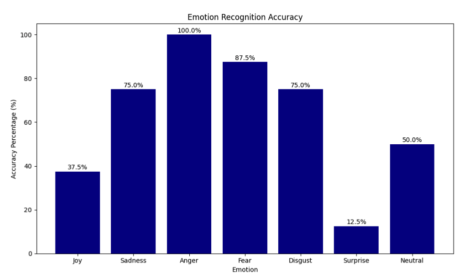
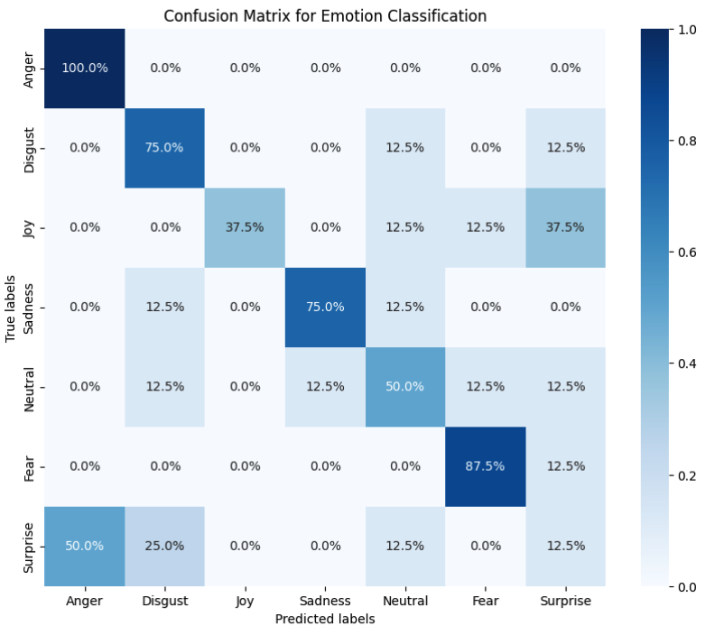
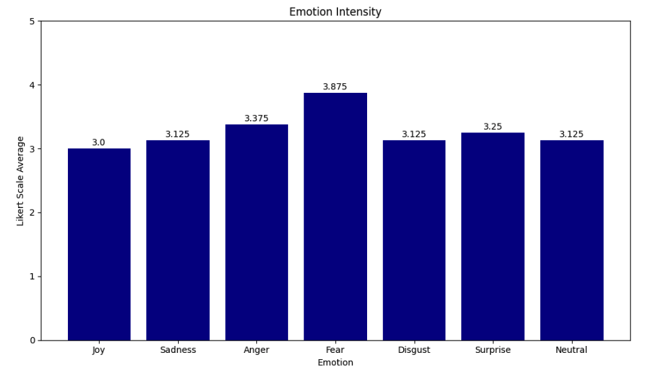
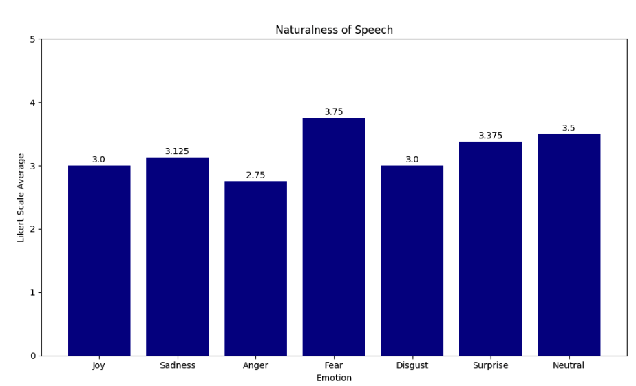
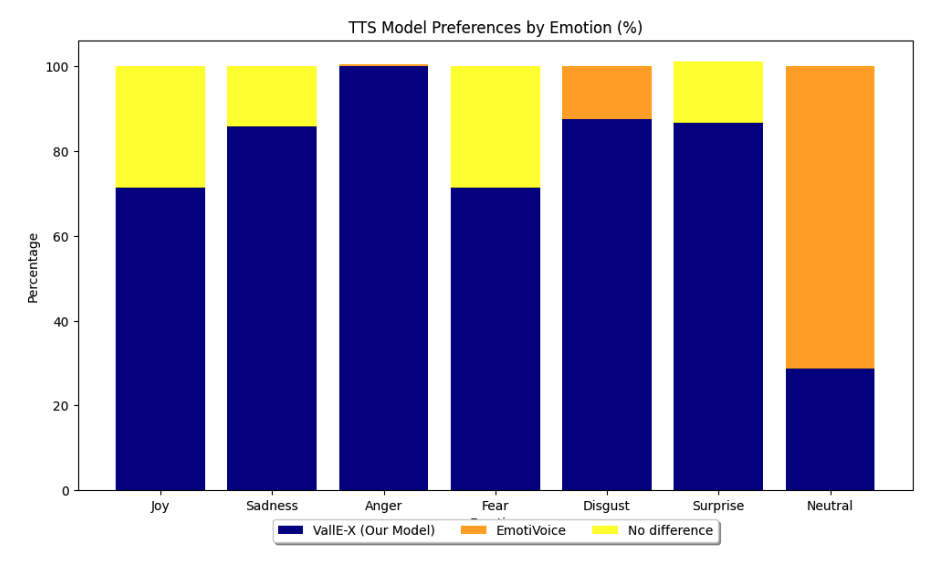
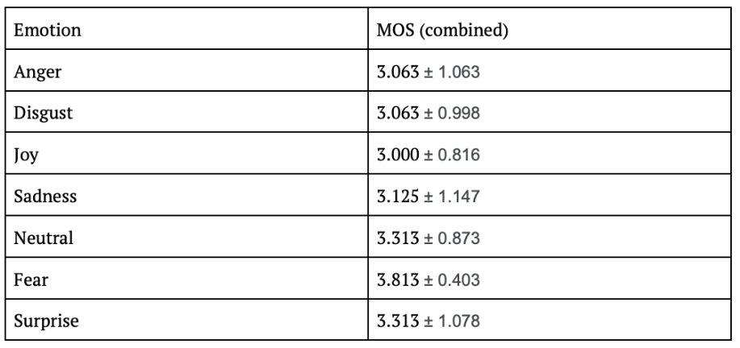

The Models Algorithms
Models
Text-to-Speech
For our main text-to-speech functionality, we decided to work on a base pre-trained model and enable it to incorporate tonal shifts to better replicate emotions. To achieve this, we initially tried to implement a version of EmotiVoice [1]. This model works on the theory of prompt conditioning.
However, we later found Microsoft’s Vall-E-X [2], an open source model with clear architecture that allowed the use of presets to change the voice used in the audio. We decided to use this as our main model, as we realised the potential for this model’s capabilities to be used for on-the-go personalisation of audio. Furthermore, this model requires less data for tuning it to our needs, a feature that further compelled us to experiment with this for our main component with 7 emotions.
Sentiment Analyser
For our sentiment analyser, our research revealed three possible models we could make use of: DistilROBERTA [3,4], DistilBERT [5] and VADER. DistilROBERTA displays higher accuracy in sentiment analysis, but we also made use of DistilBERT in combination with this model due to its efficiency.
Data
Text-to-Speech
In order to create emotional VallE-X presets, we made use of audio clips from the Toronto Emotional Speech Set (TESS) dataset [6]. This is a set of professional audio recordings by two separate individuals. Each recording consists of the speaker saying the sentence ‘Say the word: _ ’, followed by a word out of a list of 200 words, leading to 200 sentences per iteration.
This process has been repeated by each speaker for 7 different emotions, leading to the formation of a dataset that sets the industry standard for speech sentiment tasks. We experimented with the use of these audio clips in various combinations, as outlined below. The data required no preprocessing due to the high quality professional audio provided. Each individual audio clip is 3 seconds long, so we eventually joined some of them sequentially to create longer tracks.
Sentiment Analyser
All text used for testing our sentiment analyser were obtained through OpenAI's ChatGPT. This allowed us to have greater control over the text being generated for testing, and helped us target edge cases such as certain texts with ambiguous emotional labels. We also made use of the dair-ai emotions dataset [7], comprising of English Twitter messages sorted into six emotion categories, as well as the DailyDialog dataset [8] consisting of conversations about daily life topics which are also sorted by emotion labels.
Experiments
Text-to-Speech
Iteration 1We used a single audio clip from the TESS dataset to form the presets, experimenting with different audio clips individually. This did not achieve the level of emotional variation required for the emotion to be apparent. The model Vall-E-X, however, requires 3-10 seconds of data in order for the preset to be created well. While each individual clip was 3 seconds long, we then decided to aim for the higher end of the time range.
Iteration 2In the second iteration, we found that the data needed some minor processing before we could use it to make a preset. We made use of three audio clips per emotion, all from the same speaker, and joined them together to create a larger audio clip. Longer length data helped form a more usable preset, leading to more realistic and high quality outputs. It is this version of the model that we then evaluated with testers.
Experiment Design
Through the course of evaluation, our objectives have been threefold:
- To ensure that the emotions that the audio is supposed to convey (joy, sadness, anger, fear, disgust, surprise and neutral) are understandable and recognizable for users with no context
- To establish a benchmark for human-perceived naturalness of the speech produced, serving as a checkpoint for further iterations of development
- Determining whether our model outperforms similar solutions present in the market already
In order to evaluate these metrics, we decided to conduct a blind test with 8 testers consisting of friends and family. We first generated three audio samples for each emotion, with an effort to keep the content of the text as neutral as possible while still being effective. The sentences used for these generations were all approximately 10 words long, in order not to exceed the tester’s attention span over the course of the experiment.
The same sentence and emotion combinations were then used to generate audio using our version 1 model, EmotiVoice. These samples were all saved to a Google Drive, with each folder representing an unnamed emotion. Within the folder are the audio files separated in terms of the model that produced them, with no indications to allow identification of our model out of the two.
These audio samples were then linked in a Google Forms survey, instructing the tester to listen to each sample, and then classify the emotion they thought it represented. They were then asked to rate the naturalness of the speech, as well as how intense they thought the emotion sounded, to objectively evaluate the ease of classification.
Finally, the Google Form also linked the folders containing audio from our model as well as the folder with version 1 generations in a pairwise comparison section. This section informs the user of the emotion they are supposed to be understanding through the audio files, and then asks them to choose whether they prefer model 1 or model 2 outputs.
Performance Evaluation Method
Identifiability: To evaluate how easily identifiable the emotion in our text-to-speech system is, we measured the proportion of testers who were able to classify the emotion accurately and represented it as a percentage of the whole population.
Naturalness and Intensity Ratings: We made use of Likert scale ratings from 1-5, with 5 being the high end, to give users an objective yet flexible way of expressing their views on the naturalness of the speech produced, as well as the ease with which they could identify the emotion.
Statistical Analysis: To provide a confidence level for our model’s output, we provide the range within which the outputs are likely to fall.
Experiment Results
The following are the results of our model evaluation.
Classification accuracyAs is shown, anger is our model’s best performing emotion with 100% of users classifying it accurately. Disgust and sadness followed, with most people correctly identifying the two. Surprise and joy are emotions that need further improvement to make them more distinctive and easily recognisable.
When not classified correctly, the emotions that are mistaken instead are represented by this confusion matrix.
 IntensityTo better qualify how identifiable the emotions were, each of them was rated for their intensity. This chart represents the mean of all the testers’ choices for each correctly classified emotion, resulting in an average intensity score.
 NaturalnessA similar method was used to quantify the average naturalness score for each emotion’s outputs, measuring the overall quality of the speech. The mean of each tester’s rating is represented below.
 Pairwise ComparisonThe given chart represents the proportions of testers who chose between model 1, model 2 and those who found no real difference between the outputs produced by each. This is done for each emotion.
 Statistical AnalysisBy taking the mean of the average intensity score and average speech naturalness score, we obtained an overall Mean Opinion Score (MOS) for each emotion. The standard deviation in the values obtained from the testers is also shown alongside.
Sentiment Analyser
In order to test the efficacy of the models we used for our sentiment analyser, we generated a wide set of texts through ChatGPT, all of which corresponded distinctly with one of our main emotions.
Iteration 1Initially the accuracy rate of each of the models used was tested individually to choose from them. However, on their own, none of the models performed satisfactorily on one or more emotion counts. Moreover, VADER only allowed classification into three sentiment categories: positive, negative and neutral.
Iteration 2For our second attempt, we decided to use DistilBERT and DistilRoBERTa in combination. With further fine-tuning using the datasets DailyDialog and Emotions by Dair-AI, the analysis accuracy rate improved significantly to 98.7%. Thus, we decided to make use of DistilBERT and DistilRoBERTa, both of which together covered all the emotions we wished to be able to recognise and synthesise. Their outputs are taken into account in a weighted fashion, with DistilRoBERTa’s output being given higher priority due to its superior accuracy in sentiment analysis tasks.
Discussions
Key Findings
Out of the 7 emotions evaluated, anger, sadness, fear and disgust outperformed surprise and joy by a large margin. This suggests room for improvement in training our model’s prosody control for more positive emotional contexts which require greater variation and control.
However, each correctly classified emotion’s mean intensity rating was over 3 on average, as was the mean naturalness rating, representing a fair level of confidence in the tester’s choice. In real-world contexts, with input text explicitly representing the sentiment being conveyed, these numbers will increase.
Finally, pairwise comparisons revealed that for every emotion we tuned, the majority of testers preferred version 2’s synthesis to version 1 for the same sentences, or found no real difference, showing that we have outperformed the existing solution to the same problem. However, one notable exception is the neutral setting, in which version 1 outperformed the VallE-X based version 2 according to 70% of testers. This is something that can be resolved in further iterations of our model’s preset data.
Interpretation of Results
Existing TTS technology relies on large amounts of data for training or fine-tuning existing models in order to produce reliable audio output. This makes it difficult to allow on-the-ground changes to the model without significant use of data and computational resources.
Our solution, however, makes use of prosody, pitch, speed and other factors in an audio that distinguish its emotional quality to produce the required output. This means we require very little data to extract such metrics from. Once this information is stored, any audio output can be altered at a binary level to match these qualitative thresholds. Thus, using minimal data and basic computational power, our model has already achieved a significantly high level of approval from test users. Given better quality data and more time to further probe this method of using audio presets, we can improve the quality of emotional output drastically in an exponentially shorter time than fine-tuning would require.
As the use of presets involves changing the default audio produced at a low level, this can sometimes lead to issues with intelligibility of the speech due to unwanted distortions. However, bearing this in mind along with its generative nature, our model has a fairly high rate of generating the desired audio correctly with no need for regeneration.
This also leads to the neutral emotion sounding less promising than the default audio generation from the TTS model used. Correcting this is easy as we can just make use of the default audio from the model which sounds neutral owing to its lack of tonal changes. Anger and fear were rated highly, perhaps due to the more consistent nature of the tone required to represent these emotions.
Practical Implications
Voice personalisation, while available in other models available online, is currently either too costly or unreliable in its outputs, rendering it unusable. Our technology, however, has potential for the user to be able to use their own voice and manner of conveying each emotion without needing to retrain the model that the system provides. In the field, this is groundbreaking and can change the lives of hundreds of MND patients when implemented by making possible the development of applications that the user can personalise with very little effort on their part and no major costs to run the system
Limitations
Methodological limitations to these evaluations include the limited sample size of our testers. Testers found it difficult to make time for a survey that required listening to multiple audio samples in one sitting. Although the survey was done online to allow greater flexibility, technical issues with the same also deterred some potential testers. Additionally, the lengthy and repetitive nature of this survey meant that in the interest of obtaining genuine responses, we needed to limit the number of audio samples we could display.
Some technical limitations to our model include the hardware available to us for developing and running the model. The nature of presets also means that without further tuning, the range of emotional nuance available to the user is limited. This is something that can be improved simply by adding more presets, or using a larger amount of varied data to create the emotion. Lastly, as VallE-X is a generative audio model, it tends to experience hallucinations in output occasionally. This is an issue that cannot be solved without extensive feedback learning.
Further Investigation/Improvements
Improvements required for the model to function smoothly include the use of default audio generation instead of a neutral emotion preset. Additional tuning to the presets used can be implemented with access to higher quality data. Furthermore, the time required to generate an audio sample must also be decreased as much as possible, with the help of GPU hardware.
Conclusion
Our model performs at a level that meets and exceeds the industry benchmark for open source text-to-speech technology, with the added feature of prosodic control in a personalised manner. Crucially, this is done using minimal data, expanding possibilities of true personalisation on the ground level by users of the product as well.
The model meets the key requirements of realistically portraying 7 main emotional variations in speech (joy, sadness, anger, fear, disgust, surprise and neutral). Moreover it does so with a low error rate and produces realistic speech. The potential for this model to be used in other activities like audio generation in various contexts is also largely doable. Albeit non-deterministic, the model still works at a high enough level that its purpose is fulfilled satisfactorily.
References
- NetEase Youdao, "EmotiVoice," GitHub, 2023. [Online]. Available: https://github.com/netease-youdao/EmotiVoice. [Accessed: 22-Mar-2024]
- Plachtaa, "VALL-E-X," GitHub, 2023. [Online]. Available: https://github.com/Plachtaa/VALL-E-X. [Accessed: 22-Mar-2024]
- J. Hartmann, "Emotion-English-DistilRoberta-Base," Hugging Face, 2023. [Online]. Available: https://huggingface.co/j-hartmann/emotion-english-distilroberta-base. [Accessed: 22-Mar-2024]
- M. Jieli, "Emotion Text Classifier," Hugging Face, 2023. [Online]. Available: https://huggingface.co/michellejieli/emotion_text_classifier. [Accessed: 22-Mar-2024]
- B. Savani, "Distilbert-Base-Uncased-Emotion," Hugging Face, 2023. [Online]. Available: https://huggingface.co/bhadresh-savani/distilbert-base-uncased-emotion. [Accessed: 22-Mar-2024]
- EJ Lok, "Toronto Emotional Speech Set (TESS)," Kaggle, 2023. [Online]. Available: https://www.kaggle.com/datasets/ejlok1/toronto-emotional-speech-set-tess. [Accessed: 22-Mar-2024]
- dair-ai, "Emotion," Hugging Face Datasets, 2023. [Online]. Available: https://huggingface.co/datasets/dair-ai/emotion. [Accessed: 22-Mar-2024]
- "Daily Dialog," Hugging Face Datasets, 2023. [Online]. Available: https://huggingface.co/datasets/daily_dialog?row=61. [Accessed: 22-Mar-2024]